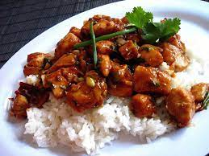

Kung Pao Chicken

A spicy Chinese chicken dish mixed with peanuts, peppers, and sauce.
Many Chinese dishes have historical backgrounds and origins, including "Kung Pao Chicken"
with bears the name of a high-ranking officer who died during the Ching dynasty.
It is a very popular dish of the Szechwan school. Make sure to use a wok for stir frying
and serve with rice.
Ingredients
- 1 1/4 lb chicken breasts, cubed
- 1/2 tsp salt
- 1 egg white
- 1 tbsp cornstarch
- 2 cups oil for frying
- 1/2 cup roasted peanuts
- 4-6 jalapenos, chopped
- 2 scallions, chopped 1/2 inch lengths
- 2 cloves garlic, minced
For the Sauce
- 1 tsp chili paste with garlic
- 2 tbsp soy sauce
- 1 tbsp sherry
- 1 tsp red wine vinegar
- 1 tsp sugar
- 1/4 cup chicken stock
- 1 tsp cornstarch
- 1 tsp sesame oil
Directions
- Combine chicken, salt, egg white, cornstarch, and mix with hands.
- Blend sauce ingredients in a small bowl.
- Heat oil to 400 F, fry chicken until it separates, remove.
- Lower to 350 F, fry peanuts until golden, remove.
- Heat 2 tbsp oil to 400 F, stir fry peppers, lower to 275 F and add garlic and scallions, stir 1 min.
- Increase heat to 425 F, add chicken, cook 1 min, then add sauce and peanuts. Cook 1-2 min.